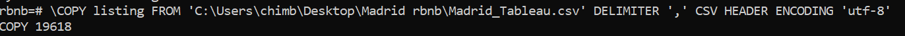

This end-to-end project consists in gathering some statistics about every airbnb available to rent in Madrid. I used a kaggle dataset
gathering informations about every flat such as the number of rooms, localisation, reviews, price...etc. I got more insight about this
dataset thanks to some data cleaning and analysis with python. Then I analysed the attributes impacting the price and the rating. Finally, I used
SQL to write some more queries in order to fill an interactive Tableau dashboard summarizing the information from the dataset.
Data gathering, cleaning and analysis with python
First, I gathered some data thanks to a kaggle dataset about Airbnb in Madrid (The dataset, I used the listing.csv only).
Then I cleaned everything thanks to the pandas library and I analysed the data to answer some questions about the airbnb available in Madrid. I have also studied the impact of somes attributes that affects the price or the flat rating. This step is detailed on this commented code
available on my Github: The code.
Creation of SQL table and filling them with the data rows
I first created the structures of the table used for the SQL request.
This step is detailed on this code
available on my Github: The code.
Finally, in order to fill those tables created with all the rows available very quickly, I just run this line of code on the postgreSQL
shell.
SQL queries in order to fill the Tableau Dashboard with statistics
To get some more insight, I created several SQL queries on postgreSQL to be shown then in a Tableau Dashboard.
This step is detailed on this code
available on my Github: The code.
Tableau dashboard visual
Finally, I was able to create a visual available on my Tableau Public profile. On this dashboard, we can select a neighbourhood group and it displays on a map every flat available with
their main attributes, and the average price and rating of every neighbourhood in this neighbourhood group. By clicking on a certain neighbourhood average price bar on the average price bar chart, we can filter
on the map to have only this special neighbourhood flats displayed on screen (Average price graph work as a filter). We can also filter the flat on the map by clicking on a certain roomtype or a bedroom number as those graph work as filter as well.
This interactive visual is available here on my Tableau Public profile (note: if you are on laptop think about ticking the option of displaying the dashboard as on a desktop at the bottom): The dashboard.
 This end-to-end project consists in gathering some statistics about every airbnb available to rent in Madrid. I used a kaggle dataset
gathering informations about every flat such as the number of rooms, localisation, reviews, price...etc. I got more insight about this
dataset thanks to some data cleaning and analysis with python. Then I analysed the attributes impacting the price and the rating. Finally, I used
SQL to write some more queries in order to fill an interactive Tableau dashboard summarizing the information from the dataset.
This end-to-end project consists in gathering some statistics about every airbnb available to rent in Madrid. I used a kaggle dataset
gathering informations about every flat such as the number of rooms, localisation, reviews, price...etc. I got more insight about this
dataset thanks to some data cleaning and analysis with python. Then I analysed the attributes impacting the price and the rating. Finally, I used
SQL to write some more queries in order to fill an interactive Tableau dashboard summarizing the information from the dataset.